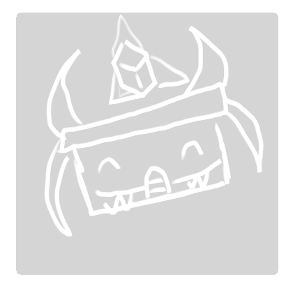

Neurodiversity in Minors
Easter egg counter
- Tsar bot
- Dino png
- Constellation stuff
- References
- Survey
- Secret
Click the easter egg when you find it!
What is Neurodiversity?

[1]
Neurodiversity is when a persons brain works differently than others.
Neurodiversity, sometimes called special needs, is when someones mind works in special ways.
This may include finding writing or reading harder than other classmates, being unable to 'read the room' --in extreme ways, or even, not being able to recognize faces (also in an extreme extent).
Neurodiversity is not curable, hence it is not like depression or anxiety disorders. They are uncontrollable in most cases, thus everyone should treat people with special needs like normal people.
Our aim in this article-like website is to bring you understanding to special people around you and how to treat them like a good person.
[2] In Hong Kong, 30-40% of people have neurodiversity. [3] there are 10-20% of people worldwide who have neurodiversity.
There are different types of neurodiversity, for example, autism, ADHD and tourettes.
[4] Autism spectrum disorder, or autism, is one of the more commonly seen special need. People with autism may act like the following:
- Difficulty talking and acting in front of others.
- Troubles understanding people.
- Constant repetition of the same actions (in a methodical manner).
As autism is a spectrum, there are wayyyyyy different kinds of traits.
[5] People with ADHD would not be able to keep focus, they may inherit traits of hyperactivity and impulsivity.
People with tourettes would have both motor and vocal tics which occur several times a day and it’s uncontrollable.
Bullying the neurominority
[13]Having a disability can make children and teens a higher chance of being a target of bullies, 62% of students with autism spectrum disorder report being bullied once a week or more. And it can harm them in many ways, including their self-esteem, mental health, social skills and school progress. [12]
The best way to not accidentally hurt people with special needs is to acknowledge that these things are normal and is okay. +1000 social credits [8]
Neurodiverse students have a higher chance of getting anxiety or depression. [10]
People with special needs have difficulties dealing with feelings.
Compared to their classmates, people who have special needs may feel things more deeply.
You should treat unique students by not insulting what they can't control, otherwise they might feel like an outcast.
According to professionals, there is a lack of resources for understanding neurodiversity in medical school, even as pediatricians there’s very little focus on mental wellness, they don’t pair medication with therapy to meet the needs of the children, they also have limited time to interact with the patient. [11]
May 15 - June 15 is recognised as the Tourette Association Awareness Month. [14]
Organizations
- The Institute of Neurodiversity (ION) [15] (global organisation)
- The Neurodiversity Association Hong Kong [16] (Hong Kong organisation)
- Anti-bullying [17]
How special needs are treated
Throughout our survey, we have found that people above KS3 (not including KS3) tend to ignore neurodiversity and normalizes involuntary activities. However, for KS3, our data has shown lower levels of empathy and kindness, where some would even express their 'annoyance' and how they would tease the neurodivergent.
We have interviewed several people across KCCIS. The first person we interviewed was someone with Asperger's syndrome, they have shared their positive experience in secondary school however unpleasant situation during their Primary school experience. This goes on to show that younger kids lack understanding of neurodiversity.
For the second and third interviewee, we have met with the school's counsellor & Mr. Trio.
Andrea from KCCIS has tourettes
Andrea has been a victim of tourettes since 5th Grade, tourettes means she frequently does repetitive movements involuntarily. This includes swearing, head jerks, and snorting, ( however ticks, actions that are due to tourettes, vary from time to time).
She has faced a lot of bullying from friends, classmates, and even teachers. Discrimination in this case included name calling, telling her to ‘shut up’, and getting warnings from teachers for something she did not do intentionally.
This case is an example of how you should not treat people with neurodiversity. Instead, she has told us that she preferred if others did not bring much attention to her special needs.